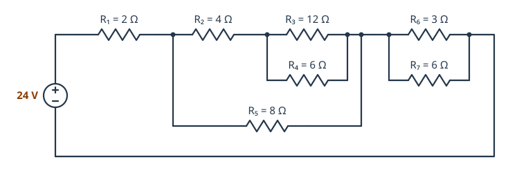
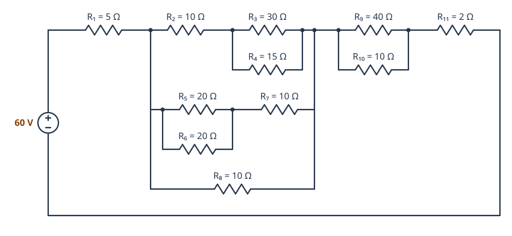
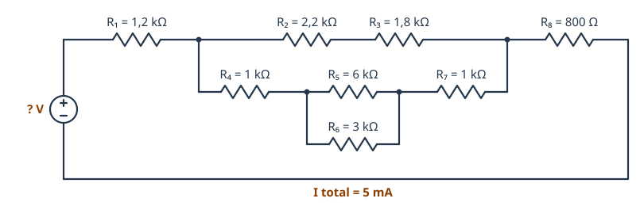
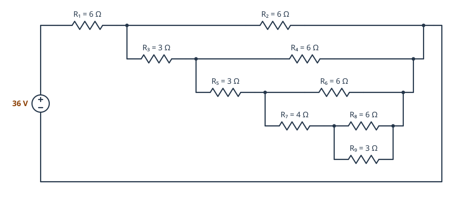
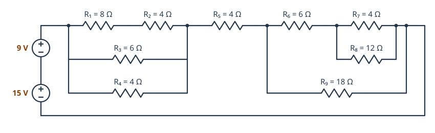
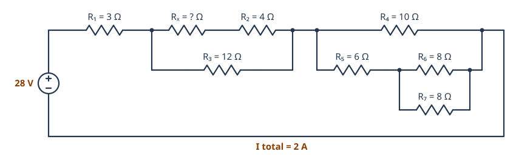

0221 · Montaje y mantenimiento de equipo · Tema 1
Boletín 4 · Mixtos avanzados
Boletín 4 · Mixtos avanzados
Seis circuitos que amplían el boletín 2. Tienen más niveles de anidamiento y piden algo más que la corriente de la fuente: intensidades de rama, tensiones parciales, potencias y una resistencia desconocida. Reduce siempre desde el bloque más interno hacia la fuente y comprueba que las tensiones y las intensidades suman lo que deben.
1. Tres niveles de anidamiento
Calcula:
- La resistencia equivalente y la intensidad que suministra la fuente.
- La tensión en R₁, en el bloque central y en el paralelo R₆∥R₇.
- La intensidad que atraviesa cada una de las siete resistencias.


2. Tres ramas y once resistencias
Calcula:
- La intensidad suministrada por la fuente de 60 V.
- La intensidad de cada una de las tres ramas del bloque central.
- La tensión y la intensidad en R₉ y en R₁₀.


3. Fuente desconocida y unidades mezcladas
Calcula:
- El voltaje de la fuente, sabiendo que suministra 5 mA.
- La intensidad de cada rama del paralelo.
- La intensidad que pasa por R₅ y por R₆.


4. Red en escalera
Calcula:
- La intensidad suministrada por la fuente de 36 V.
- La intensidad que atraviesa R₇.
- La tensión y la intensidad en R₉.


5. Dos fuentes en serie y balance de potencias
Calcula:
- La intensidad total que circula por las fuentes.
- La potencia que disipa cada una de las nueve resistencias.
- La potencia que entregan las fuentes. Comprueba la conservación de la potencia.
- ¿Qué resistencias no podrían ser de 1 W?


6. Problema inverso: la resistencia que falta
Calcula:
- El valor de Rₓ para que la fuente de 28 V suministre exactamente 2 A.
- La intensidad que pasa por Rₓ y la tensión entre sus terminales.
- La potencia que disipa Rₓ. ¿Sirve una resistencia de ½ W?
